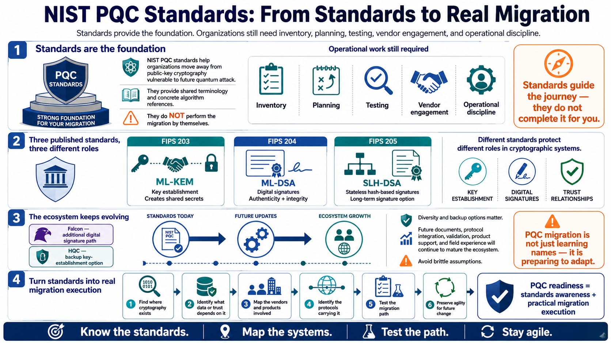

Course Summary and Key Takeaways
Connecting to LMS... Progress: in progress

Narration
NIST PQC standards provide a foundation for migrating away from public-key cryptography that is vulnerable to future quantum attack. The standards give organizations shared terminology and concrete algorithm references, but they do not perform the migration by themselves. Security teams still need inventory, planning, testing, vendor engagement, and operational discipline.
FIPS 203 covers ML-KEM for key establishment. FIPS 204 covers ML-DSA for digital signatures. FIPS 205 covers SLH-DSA for stateless hash-based digital signatures. Each standard addresses a different role in cryptographic systems. Key establishment protects how parties create shared secrets. Digital signatures protect authenticity, integrity, and trust relationships. The operational migration questions are different for each role.
Additional algorithms such as Falcon and HQC matter for diversity, backup options, and future planning. They remind us that PQC migration is not a one-time naming exercise. The standards ecosystem will continue maturing through additional documents, protocol integration, validation, product support, and field experience. Organizations should avoid locking themselves into brittle assumptions.
The goal is not merely to know algorithm names. The goal is to connect standards to real systems: where cryptography exists, what data or trust depends on it, which vendors control it, which protocols carry it, how it will be tested, and how it can be changed later. PQC readiness is the combination of standards awareness and practical migration execution.